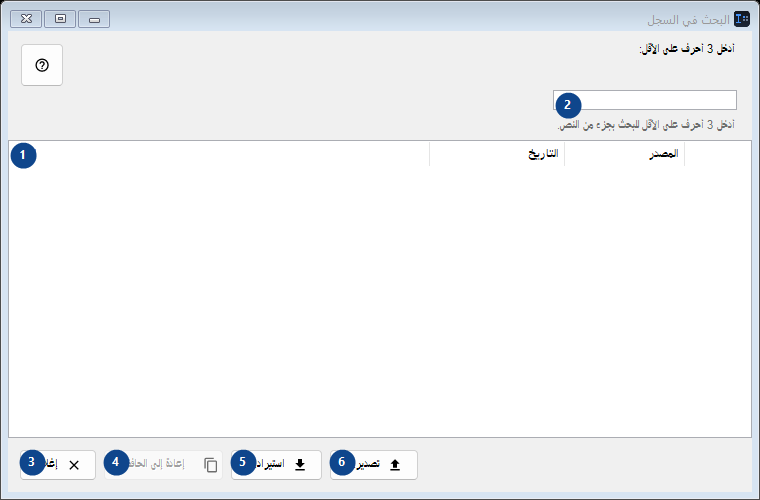
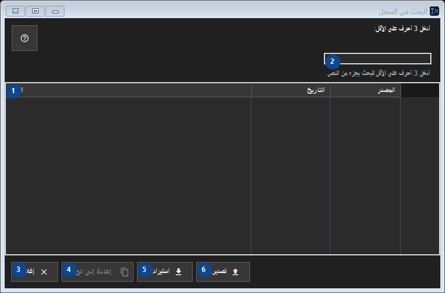

البحث في السجل
الغرض
يُحفظ السجل محليًا فقط ويُشفَّر بواسطة Windows DPAPI لحسابك.


ترتيب الاستخدام
اقرأ الشروح المرقمة واختر القيم المطلوبة ثم تابع باستخدام أمر النافذة.
العناصر
1. العناصر
تعرض هذه المنطقة المحتوى أو الحالة الحالية. اختر عنصرًا للعمل عليه. النص / التاريخ / المصدر
اختصاراتك2. أدخل 3 أحرف على الأقل:
اختر أو أدخل القيمة الموضحة بجانب الحقل. راجعها قبل المتابعة.
اختصاراتك3. إغلاق
استخدم هذا الأمر لتنفيذ الإجراء المذكور. اقرأ أي طلب تأكيد قبل الموافقة.
اختصاراتك4. إعادة إلى الحافظة
استخدم هذا الأمر لتنفيذ الإجراء المذكور. اقرأ أي طلب تأكيد قبل الموافقة. هذا العنصر غير متاح حاليًا. فعّل الميزة أو اختر إدخالًا أولًا.
اختصاراتك5. استيراد...
استخدم هذا الأمر لتنفيذ الإجراء المذكور. اقرأ أي طلب تأكيد قبل الموافقة.
اختصاراتك6. تصدير...
استخدم هذا الأمر لتنفيذ الإجراء المذكور. اقرأ أي طلب تأكيد قبل الموافقة.
اختصاراتك